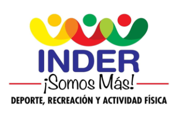
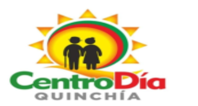

|
DEPARTAMENTO DE RISARALDA
MUNICIPIO DE QUINCHIA
INSTITUTO MUNICIPAL DE DEPORTE Y RECREACION
“INDER”
Nit. 816-003.068-4
|
 |
 |
REGISTRO FOTOGRAFICO – INFORME Nº 03 CONTRATO PRESTACIÓN DE SERVICIOS Nº 052 DE 2022
INFORME N° 04
« 18 de Noviembre – 18 de Diciembre - 2022»
HARLINSON HELY OLEA ARTEAGA
AREA: Coordinación T.I.C
“UNIDOS SOMOS MAS” DEPORTE, RECREACION Y ACTIVIDAD FISICA
Coliseo Municipal – Carrera 9 N° 5 – 28 – Barrio Niño Jesús Quinchía Risaralda
Tel: 323 362 1533 - Código Postal – 664001
E-mail: inder@quinchia-risaralda.gov.co y centro.dia.inder.quinchia@gmail.com
|
|
FECHA: NOVIEMBRE 29/2022 - GRUPO: TIEMPOS INOLVIDABLES
LA CUMBRE
ACTIVIDAD: MI HOGAR UN ENTORNO SALUDABLE
|
FECHA: NOVIEMBRE 18/2022 – SAN JOSE
ACTIVIDAD: ESCUELA DE FAMILIA
|